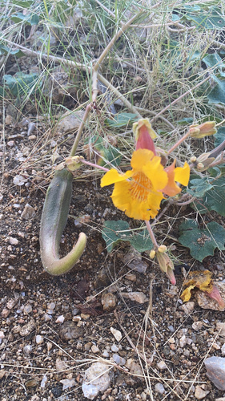

Martyniaceae
Unicorn Plant Family / Devil's Claw Family
Martyniaceae is a small family of flowering plants in the order Lamiales (Asterids), primarily native to the tropical and subtropical regions of the New World, especially arid areas. The family consists of annual or perennial herbs easily recognized by their covering of sticky glandular hairs and their highly distinctive, woody fruits equipped with hooks or horns ("claws") adapted for dispersal by animals (epizoochory).
Overview
Martyniaceae is a relatively small family, comprising about 5 genera and around 16 species. Its members are mostly robust, often sprawling, annual or perennial herbs. They are native mainly to the Americas, thriving in disturbed sites, fields, roadsides, and arid to semi-arid environments. Some species, particularly Proboscidea louisianica, have become naturalized weeds in other parts of the world.
The entire plant surface is typically covered in sticky glandular hairs, giving them a slimy or clammy feel and often a distinct, sometimes unpleasant, odor. These hairs can trap small insects. The flowers are large, showy, and zygomorphic (bilaterally symmetrical), resembling those of related families like Bignoniaceae. However, the most unmistakable feature of the family is the fruit: a capsule or drupe-like structure whose fleshy outer layer eventually decays to reveal a hard, woody endocarp bearing formidable hooks, claws, or horns. These structures latch onto the fur or feet of passing animals, ensuring effective seed dispersal.
Some species have traditional uses; the young fruits of Proboscidea are sometimes pickled, and the dried woody fruits are used in crafts or basketry by indigenous peoples in the Americas.
Quick Facts
- Scientific Name: Martyniaceae
- Common Name: Unicorn Plant Family, Devil's Claw Family
- Number of Genera: Approximately 5
- Number of Species: Approximately 16
- Distribution: Primarily New World tropics and subtropics (esp. arid regions); some naturalized elsewhere.
- Habit: Annual or perennial herbs, sticky glandular-hairy.
- Evolutionary Group: Eudicots - Asterids (Lamiids) - Lamiales
Key Characteristics
Growth Form and Habit
Annual or perennial herbs, often coarse and sprawling. The entire plant (stems, leaves, flowers, fruits) is characteristically covered in viscous (sticky) glandular hairs, often giving off a distinct scent.
Leaves
Leaves are usually opposite near the base of the plant, often becoming alternate higher up. They are simple, typically large and broad (often rounded, heart-shaped, or triangular), palmately veined, with margins that are entire or shallowly lobed. Petioles are usually long.
Inflorescence
Flowers are borne in terminal racemes, which are often few-flowered.
Flowers
Flowers are large, showy, zygomorphic (bilaterally symmetrical), and bisexual, typically 5-merous.
- Calyx: 5 sepals, which can be free or fused at the base into a tube, sometimes spathe-like (split down one side). Often subtended by bractlets.
- Corolla: 5 petals fused into a tube (sympetalous) that expands into an oblique, bell-shaped or funnel-shaped limb, often weakly bilabiate (two-lipped) with 5 lobes. Colors range from pink, purple, magenta, to yellowish or whitish, frequently with contrasting nectar guides (spots or lines) in the throat.
- Androecium: Typically consists of 4 fertile stamens arranged in two pairs of unequal length (didynamous), plus usually a fifth, posterior stamen represented by a sterile staminode (sometimes absent). Stamens are attached to the corolla tube (epipetalous). Anthers often stick together (connivent) in pairs.
- Gynoecium: The ovary is superior, composed of 2 fused carpels. It forms a single locule, but the parietal placentas (bearing the ovules) intrude deeply, sometimes meeting in the center to make it appear almost 2-locular. Ovules are numerous (or few in Martynia). A single slender style terminates in a sensitive, 2-lobed stigma that closes upon touch.
Fruits and Seeds
The fruit is highly distinctive and diagnostic for the family. It is a capsule or drupe-like fruit with a fleshy or leathery outer layer (exocarp) that eventually decays or wears away. This reveals a hard, woody inner layer (endocarp) that is elaborately sculptured with ridges, pits, and especially prominent spines or hooks. Typically, the endocarp terminates in two long, curved horns or claws (sometimes shorter spines). This woody structure with its hooks facilitates dispersal by attaching to animals (epizoochory). The fruit usually dehisces loculicidally along the crest between the horns. Seeds are relatively large, often flattened.
Field Identification
Martyniaceae are readily identified by their sticky hairs and unique fruits:
Primary Identification Features
- Sticky Glandular Hairs: The entire plant feels clammy or sticky due to dense glandular hairs. Often has a distinctive odor.
- Herbaceous Habit: Plants are non-woody annuals or perennials.
- Large, Showy Zygomorphic Flowers: Flowers are bilaterally symmetrical, often bell-shaped or two-lipped, resembling Bignoniaceae flowers.
- Distinctive Horned/Clawed Fruit: The woody fruit with long terminal hooks or claws is unmistakable and the most diagnostic feature (even when dried).
- Broad, Opposite/Alternate Leaves: Leaves are typically large, heart-shaped or rounded, opposite below and alternate above.
Secondary Identification Features
- 4 Fertile Stamens (+ Staminode): Check inside the corolla tube.
- Superior Ovary: Ovary located above other floral parts.
- Habitat: Often found in open, disturbed, or arid/semi-arid areas in the Americas.
Seasonal Identification Tips
- Flowering Season: Typically during warmer, wetter periods (summer/monsoon season). Flowers are conspicuous.
- Fruiting Season: The unique woody fruits develop after flowering and persist for a long time, often found dried on the ground or attached to plants, making identification possible even after the plant has senesced.
- Vegetative Season: The sticky glandular hairs and broad leaves are characteristic even without flowers or fruits.
Common Confusion Points
While the fruit is unique, flowers and habit might resemble other families:
- Pedaliaceae (Sesame Family): Closely related; also often has glandular hairs and sometimes horned fruits (Sesamum capsules can have small points, Harpagophytum has grappling-hook fruits). Pedaliaceae often have axile placentation and differences in floral details.
- Bignoniaceae (Trumpet Creeper Family): Often has similar large, zygomorphic, trumpet-shaped flowers and opposite leaves, but Bignoniaceae are typically woody vines or trees, lack sticky glandular hairs covering the whole plant, and have very different fruits (usually long capsules with flat, winged seeds).
- Gesneriaceae (African Violet Family): Some have similar zygomorphic flowers, but are often epiphytic or rock-dwelling herbs, lack the pervasive sticky hairs, and have different fruit types.
- Lamiaceae (Mint Family): Have zygomorphic flowers and sometimes glandular hairs, but typically have square stems, opposite leaves throughout, and fruit consisting of 4 nutlets.
Field Guide Quick Reference
Look For:
- Herbaceous annual/perennial
- Covered in sticky glandular hairs
- Broad leaves (opposite below, alternate above)
- Large, showy, zygomorphic flowers
- 4 fertile stamens (+ staminode)
- Superior ovary
- Distinctive woody fruit with horns/claws
Key Variations:
- Flower color
- Length and shape of fruit horns/spines
- Annual vs. perennial duration
- Specific glandular hair morphology
Notable Examples
The family is small but contains some well-known species, often recognized by their fruits:

Proboscidea louisianica
Devil's Claw, Common Unicorn Plant, Ram's Horn
An annual herb native to North America, now naturalized elsewhere. Known for its large, pale pinkish or whitish flowers with yellow nectar guides, and its large fruit whose woody endocarp develops two very long, curving claws. The young green fruits are sometimes pickled.

Martynia annua
Cat's Claw, Tiger's Claw
An annual herb native to Mexico, now a widespread weed in tropical regions worldwide. It has pinkish flowers and a fruit with two shorter, stout, hooked claws compared to Proboscidea. Covered in sticky hairs.

Ibicella lutea
Yellow Unicorn Plant, Devil's Grip
Native to South America, but naturalized in other warm regions. Similar habit to Proboscidea but with yellow flowers and extremely long, slender fruit claws. Known for its very sticky hairs and strong odor.
Phylogeny and Classification
Martyniaceae is placed within the large order Lamiales, a major group within the Asterid clade (specifically Lamiids or Euasterids I). This order includes many familiar families like mints (Lamiaceae), verbenas (Verbenaceae), snapdragons (Plantaginaceae), and trumpet creepers (Bignoniaceae).
Within Lamiales, Martyniaceae is very closely related to Pedaliaceae (Sesame family). These two families share features like glandular hairs and sometimes elaborate fruits adapted for animal dispersal. Some past classifications even included Martyniaceae within Pedaliaceae. Molecular data confirms their close relationship, placing them together in a well-supported clade, which is sister to or near other families like Acanthaceae (Acanthus family).
Position in Plant Phylogeny
- Kingdom: Plantae
- Clade: Angiosperms (Flowering plants)
- Clade: Eudicots
- Clade: Asterids
- Clade: Lamiids (Euasterids I)
- Order: Lamiales
- Family: Martyniaceae
Evolutionary Significance
Martyniaceae, though small, is significant for:
- Extreme fruit specialization: The horned/clawed woody fruit is a remarkable example of adaptation for epizoochory (dispersal via attachment to animals).
- Glandular hairs: The pervasive sticky glandular hairs likely serve defensive functions (trapping insects) and may relate to adaptation to arid environments.
- Pollination biology: The large, showy flowers with nectar guides and sensitive stigmas point to specialized pollination, likely by large bees.
- Relationship with Pedaliaceae: Provides insights into the evolution of shared traits (glandular hairs, specialized fruits) within this clade of Lamiales.
- Adaptation to disturbed habitats: Many species are successful colonizers of open or disturbed areas.